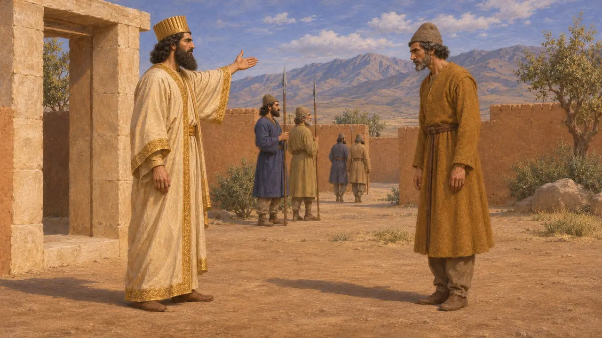
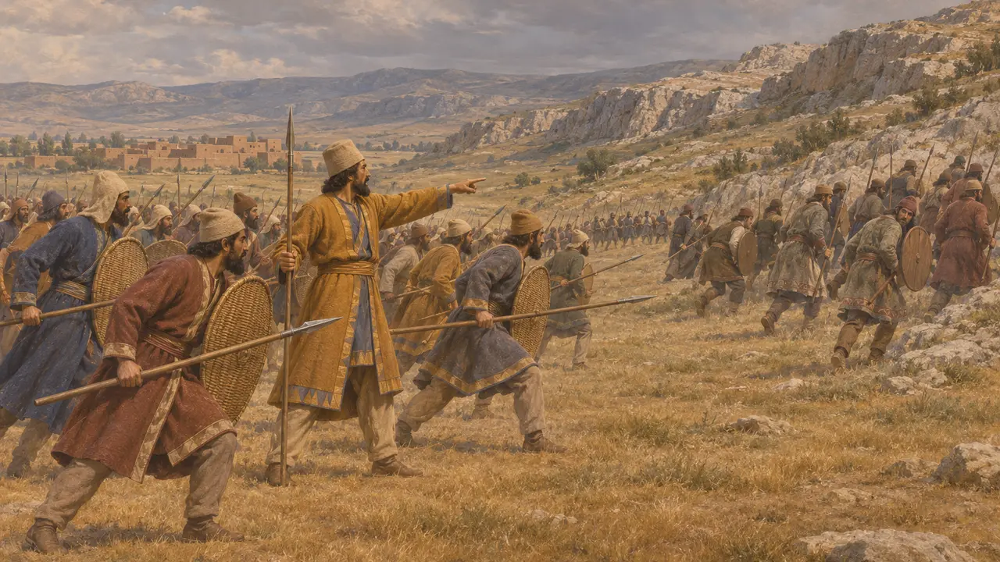
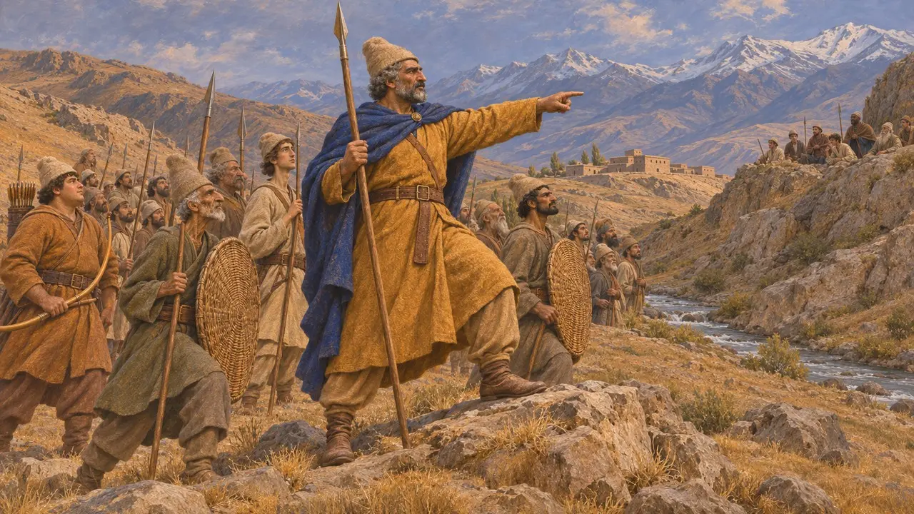
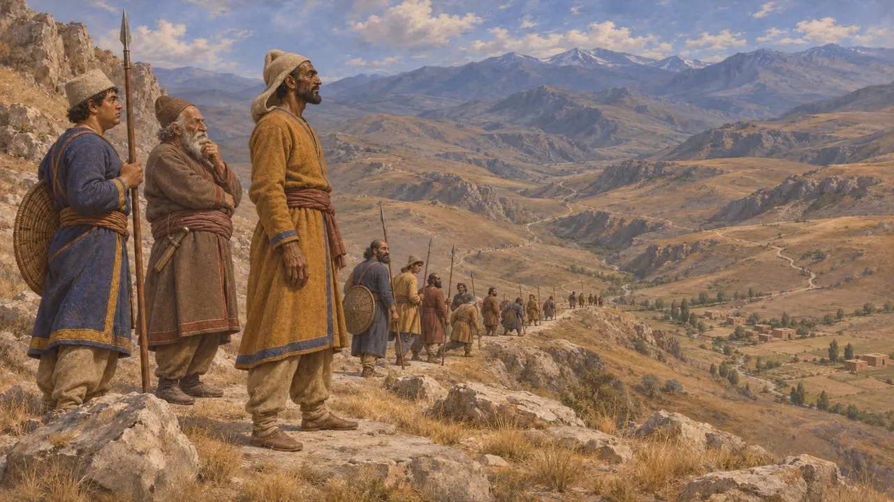
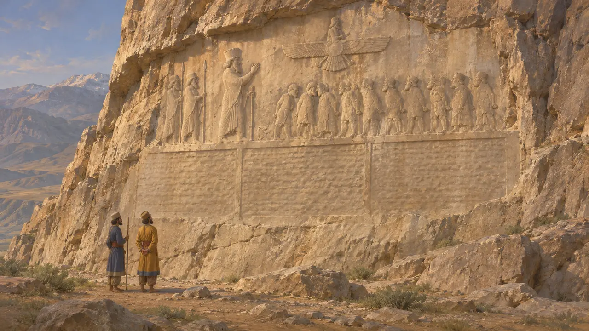

وئومیسه
فرمانده پارسی علیه شورشیان ارمنی برای داریوش، 522-521 پ.م.
وئومیسه پارسیای بود که داریوش او را در شورشهایی که پس از کشته شدن گئومات درگرفت، به نبرد با شورشیان ارمنستان فرستاد. او را از سنگنبشتهٔ بیستون میشناسیم که داریوش در آن وی را بندهٔ خود میخواند. هرودوت از او یاد نمیکند.
در بازی: وئومیسه در مقالههای رویدادهای دانشنامه، از جمله جنگ در ارمنستان، نام برده شده است و سازوکار ویژهٔ خود را ندارد.


نبردها در آشور
در اسنادبنا بر سنگنبشته، وئومیسه بیش از یک بار با شورشیان در نبرد روبهرو شد و نخستین نبرد در جایی به نام ایزالا در آشور رخ داد. داریوش پیروزیها را به یاری اهورامزدا نسبت میدهد. سپس وئومیسه در ارمنستان ماند تا شاه به ماد رسید.
DB §27-29

فرماندهٔ دوم، دادرشیش
در اسنادداریوش یک بندهٔ ارمنی به نام دادرشیش را نیز علیه همین شورشیان فرستاد و بیستون نبردهای او را در بندهای جداگانه گزارش میکند. این دو لشکرکشی به یک جنگ تعلق دارند. دادرشیش مدخل جداگانهٔ خود را دارد.
DB §26-30

آنچه منابع بیپاسخ میگذارند
مورد مناقشهمورخان نمیتوانند جای همهٔ مکانهایی را که داریوش نام میبرد مشخص کنند و موقعیت ایزالا بهویژه نامعلوم است. اینکه لشکرکشیهای آن دو فرمانده در زمان چگونه با یکدیگر جور میشدند، تنها از روی یک متن شاهی بازسازی شده است. آن متن برای ستایش داریوش نوشته شده بود و از این نبردها فقط به همین صورت خبر داریم.
P. Briant, From Cyrus to Alexander, 2002

غایب در تاریخ هرودوت
روایت باستانیهرودوت از توطئه و بر تخت نشستن داریوش سخن میگوید، اما در روایت خود از آن دوران به وئومیسه یا جنگ ارمنستان با تفصیل اشاره نمیکند. این نام فقط در سنگنبشتهٔ پارسی برجای مانده است.
Herodotus 3.70-88
منابع
- DB §26-30
- P. Briant, From Cyrus to Alexander, 2002
- R. G. Kent, Old Persian: Grammar, Texts, Lexicon, 1953
- Herodotus 3.70-88